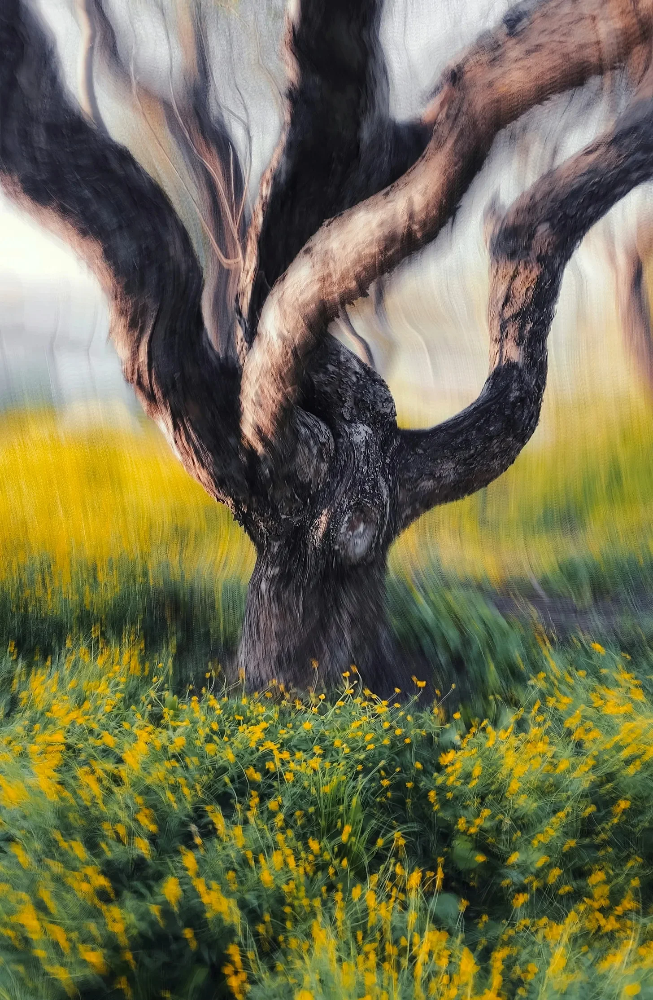

아무도 나에게 그 나무에 대해 경고하지 않았지만, 그 나무가 화난 노인이 손가락 마디를 튕기듯 가지를 비틀 때, 나는 곤경에 처했다는 걸 알았다.
[Nobody warned me about the tree, but the moment it twisted its branches like an angry old man cracking his knuckles, I knew I was in trouble.]
나를 괴롭힌 건 비틀리는 것뿐만이 아니었다. 아니, 그것은 껍질이 피부 아래의 근육처럼 물결치는 방식이었고, 뿌리가 더 이상 땅 속에 머물러 있는 것에 만족하지 않는다는 사실이었다. 그들은 꿈틀거렸고, 노란 꽃의 양탄자를 뚫고 마치 매우 중요한 곳으로 가야 할 것처럼 뻗어 나갔으며, 나무가 절대 가져서는 안 되는 일종의 느린 결단력으로 꿈틀거렸다.
[It wasn’t just the twisting that bothered me. No, it was the way the bark rippled—like muscle under skin—and the fact that its roots were no longer content to stay underground. They squirmed, stretching through the carpet of yellow flowers like they had somewhere very important to be, wriggling with a kind of slow determination that trees absolutely should not possess.]
나는 조심스럽게 한 걸음 물러서며 사과를 해야 할지 궁금해했다. 내 말은, 나는 의도적으로 침입한 것이 아니었다. 내가 재미로 그것의 개인 공간을 활보하고 있는 것은 아니었다. 하지만 그 나무가 감정을 가지고 있다면, 아마도 내가 정신적으로 그것을 조롱하고 있다는 것을 알고 있었을 것이다. 그것은 고대의, 구부정한 모습을 하고 있었고, 누군가가 저주를 받기 직전에 동화에서 볼 수 있는 그런 종류의 나무였다. 나는 경고 신호를 봤어야 했다. 뒤틀리고 꼬인 껍질, 뱀처럼 꼬인 뿌리, 공기 중에서 “돌아가, 바보야"라고 소리치는 희미한 반짝임 말이다. 하지만 아니, 나는 내가 분명히 그런 무지한 바보라는 듯이 계속 나아갔다.
[I took a cautious step back, wondering if I should apologize. I mean, I hadn’t intentionally trespassed. It wasn’t like I was traipsing through its personal space for kicks. But if the tree was sentient, it probably knew I’d been mentally mocking it. It had that ancient, hunched look about it, the kind of tree you’d see in a fairy tale right before someone got cursed. I should’ve seen the warning signs—the gnarly, twisted bark, the roots coiled like serpents, the faint shimmer in the air that screamed, "Turn back, idiot,” but no, I had pressed on like the oblivious fool I apparently am.]
그리고 이제, 나는 여기 마법의 숲에 있었다. 음, 기술적으로는 약간 으스스한 공원이었지만, 그런 게 있다면 마법의 분위기가 있었다. 나무 주변에 돋아난 노란 꽃들도 도움이 되지 않았다. 그들은 너무 밝고, 너무 완벽했으며, 마치 장면 속으로 포토샵 된 것 같았다. 단 한 송이도 시들거나 제자리를 벗어나지 않았다. 사실, 그들은 완전히 불안했고, 특히 지금은 움직이고 있었다. 그래, 그들은 일제히 흔들렸고, 내가 들을 수 없는 리듬에 맞춰 부드럽게 고개를 끄덕였다. 마치 웨스트 사이드 스토리의 꽃 버전을 공연할 준비를 하는 것 같았다. 빠진 것이라고는 손가락 튕기는 소리뿐이었다.
[And now, here I was, in an enchanted forest—well, technically, a slightly spooky park, but it had enchanted vibes, if that’s a thing. The yellow flowers sprouting around the tree didn’t help either. They were too bright, too perfect, like they’d been Photoshopped into the scene. Not a single one was wilted or out of place. In fact, they were downright unnerving, especially now that they were moving. Yeah, they swayed in unison, gently bobbing their heads to a rhythm I couldn’t hear, as if they were getting ready to perform a floral rendition of West Side Story. All that was missing was some finger snapping.]
그 나무는 다시 신음했고, 내 목덜미의 털을 곤두서게 만드는 깊고 울리는 소리였다. 또 다른 가지가 나를 향해 구부러지자 나무 껍질이 삐걱거렸다. 느리지만 신중하게, 마치 나를 시험하는 것처럼 말이다. 나는 움찔했고, 본능적으로 뒤로 물러섰지만, 내 발이 드러난 뿌리에 걸렸다. 나는 비틀거렸고, 거의 얼굴을 바닥에 대고 넘어질 뻔했지만, 간신히 균형을 잡을 수 있었다. 겨우. 내 심장은 이제 두근거리고 있었고, 내가 그 상황에서 벗어나기 전에 벗어나려는 듯 내 귀에서 쿵쾅거렸다.
[The tree groaned again, a deep, resonant sound that made the hair on the back of my neck stand on end. Its bark creaked as another branch curled toward me, slow but deliberate, like it was testing me. I flinched, instinctively stepping back, but my feet caught on an exposed root. I stumbled, nearly falling flat on my face, but managed to keep my balance. Barely. My heart was pounding now, thudding in my ears like it was trying to escape the situation before I could.]
점점 커지는 공포에도 불구하고, 나는 아직 달아날 준비가 되지 않았다. 결국, 이 모든 것이 내 머릿속에 있다는 것을 완전히 배제하지는 않았다. 아마도 나는 탈수 상태였을 것이다. 아니면 환각을 보고 있던가. 아니면 둘 다일 수도 있다. 내가 이전에 의심스러운 하이킹을 떠나서, 내가 그것을 처리할 수 있다고 확신하고, 결국 적절한 수분 공급으로 피할 수 있었을 것 같은 기괴한 상황에 처한 적이 없는 것은 아니었다.
[Despite the growing panic, I wasn’t ready to bolt just yet. After all, I hadn’t completely ruled out that this was all in my head. Maybe I was dehydrated. Or hallucinating. Or both. It’s not like I hadn’t gone off on questionable hikes before, convinced myself I could handle it, only to end up in some bizarre situation that probably could’ve been avoided with proper hydration.]
그 가지는 멈췄다. 마치 나를 재고하는 것처럼, 그것의 뒤틀린 끝은 내 얼굴에서 불과 몇 인치 떨어진 곳에 머물러 있었다. 나는 그것을 응시했고, 마치 호기심 많은 고양이가 장난감을 테스트하는 것처럼 나를 찌를 것이라고 반쯤 예상했다. 나는 그것이 나를 위협하는 것인지 아니면 내가 정확히 무엇인지 혼란스러워하는 것인지조차 확신할 수 없었다.
[The branch paused, as if reconsidering me, its gnarled tip hovering just inches from my face. I stared at it, half expecting it to poke me, like a curious cat testing a toy. I wasn’t even sure if it was threatening me or just confused about what exactly I was.]
“그래서,” 나는 말했다. 대부분 점점 더 긴장되는 침묵을 채우기 위해서였다. “너… 뭔가 필요해? 내가, 어, 모르겠어, 떠나야 할까? 아니면 이건 ‘내가 여기 있는 건 너에게 인생의 교훈을 가르치기 위해서'라는 상황 중 하나야?”
[“So,” I said, mostly to fill the increasingly tense silence. “Do you… need something? Should I, I don’t know, leave? Or is this one of those 'I’m here to teach you a life lesson’ kind of situations?”]
그 나무는 대답하지 않았다. 솔직히 말하자면, 나는 정말로 그것이 그렇게 할 거라고 기대하지 않았다. 나무들은 정확히 수다스럽지 않았다. 하지만 그것의 가지들이 움직이는 방식, 약간 뒤틀리는 방식은, 그것들은 이제 거의 손처럼 보였다. 거칠고 울퉁불퉁한 손가락을 가진 크고 나무로 된 손은 그들이 정말로 원한다면 많은 노력 없이 내 척추를 부러뜨릴 수 있을 것 같았다. 내가 오래 응시할수록, 그들은 더 인간적으로 보였다. 나는 사실상 손가락 마디, 힘줄을 볼 수 있었다. 물론, 나무 껍질과 수세기에 걸친 나무의 지혜로 만들어진 거지만 말이다.
[The tree didn’t answer, which, to be fair, I hadn’t really expected it to. Trees weren’t exactly chatty. But the way its branches shifted, contorting slightly, they almost looked like hands now. Big, wooden hands with rough, knobby fingers that looked like they could snap my spine without much effort if they really wanted to. The longer I stared, the more human they seemed. I could practically see the knuckles, the sinew—except, you know, made of bark and centuries of tree wisdom.]
또 다른 신음 소리, 이번에는 더 낮고, 더 어두웠다. 그 소리에는 분명히 위험한 무언가가 있었다. 마치 귀신이 들린 집에서 문이 삐걱거리는 소리나, 지진이 오기 전 마지막 경고와 같았다. 나는 힘겹게 침을 삼켰다.
[Another groan, this one lower, darker. There was something unmistakably dangerous about the sound, like the creaking of a door in a haunted house, or the last warning before an earthquake hits. I swallowed hard.]
“알았어, 좋아,” 나는 중얼거렸다. 목소리를 안정되게 유지하려고 노력하면서. “떠나는 게 좋겠어. 나는 그냥… 그래, 그냥 갈게.”
[“Right, okay,” I muttered, trying to keep my voice steady. “Leaving sounds good. I’ll just—yeah, I’ll just go.”]
나는 발꿈치를 돌렸다. 달리지 않도록 조심하면서 (모두가 알다시피 이런 상황에서 달리면 상황이 더 나빠진다), 하지만 두 걸음 이상 가기도 전에, 나는 그것을 들었다. 부드럽고, 거의 알아차릴 수 없는 속삭임이었다. 나는 자리에 못 박힌 듯 멈췄다.
[I turned on my heel, careful not to run (everyone knows running makes things worse in these situations), but before I’d taken more than two steps, I heard it: a soft, almost imperceptible whisper. I stopped dead in my tracks.]
그것은 나무가 아니었다. 아니, 이것은 다른 어딘가에서 오고 있었다. 더 작고, 더 미묘한 무언가에서 말이다. 나는 고개를 살짝 돌렸고 그 근원을 깨달았다. 바로 꽃들이었다. 그들의 노란 머리는 이제 모두 나를 향해 돌아섰고, 각각의 꽃은 마치 수천 개의 작고 깜박이지 않는 눈처럼 나를 마주보고 있었다. 속삭임이 커지자 꽃잎이 떨렸다. 그것은 희미한 중얼거림으로 시작되었고, 내가 상상했는지 확신할 수 없을 정도로 조용한 소리였다. 하지만 아니, 그것은 진짜였다. 꽃들이 속삭이고 있었고, 그들의 작은 목소리들은 부드럽고 섬뜩한 합창으로 합쳐지고 있었다.
[It wasn’t the tree. No, this was coming from somewhere else, something smaller, subtler. I turned my head slightly and realized the source—the flowers. Their yellow heads were all turned toward me now, each bloom facing me like a thousand tiny, unblinking eyes. The petals trembled as the whispering grew louder. It started as a faint murmur, a sound so quiet I wasn’t sure if I’d imagined it. But no, it was real. The flowers were whispering, their tiny voices merging into one soft, eerie chorus.]
나는 숨을 참았다. 그들이 무슨 말을 하는지 이해하려고 애쓰면서. 그것은 내가 알고 있는 언어가 아니었지만, 그 어조는 명백했다. 긴급하고 까다로운.
[I held my breath, straining to understand what they were saying. It wasn’t a language I knew, but the tone was unmistakable. Urgent. Demanding.]
그리고 나서, 대낮처럼 선명하게, 나는 그것을 들었다. 한 단어가, 수천 개의 작고 숨 가쁜 목소리로, 계속해서 반복되고 있었다.
“머물러.”
[And then, clear as day, I heard it. One word, repeated over and over, in a thousand tiny, breathy voices.
“Stay.”]
내 피가 차갑게 식었다. 나는 나무 쪽으로 다시 돌아섰다. 그것의 가지는 더 이상 구부러지지 않았고, 더 이상 시험하지 않았다. 그들은 뻗어 있었고, 기다리고 있었다. 그리고 뿌리는, 오 하나님, 그 뿌리는 더 멀리 퍼지고 있었고, 내 발목을 감고 나를 끌어당길 준비가 된 뱀들의 둥지처럼 나를 향해 기어오고 있었다.
[My blood ran cold. I spun back toward the tree. Its branches were no longer curled, no longer testing. They were outstretched, waiting. And the roots—oh God, the roots—were spreading further, inching toward me like a nest of snakes, ready to wrap around my ankles and pull me under.]
나는 다른 초대를 기다리지 않았다.
이번에는, 나는 달렸다.
[I didn’t wait for another invitation.
This time, I ran.]